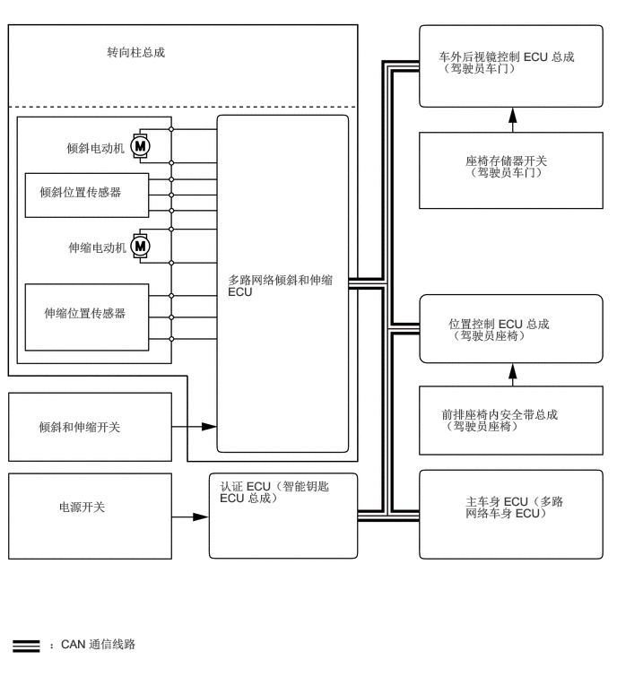

1.24,0.521 4.917,0.729
3.667,0.198
10
false
转向柱总成
0.771,1.635 4.448,1.844
3.667,0.198
10
false
倾斜电动机
0.458,2.146 4.135,2.354
3.667,0.198
10
false
倾斜位置传感器
0.792,2.792 4.469,3
3.667,0.198
10
false
伸缩电动机
0.51,3.552 1.75,4.094
1.229,0.531
10
false
伸缩位置传感器
0.448,4.875 2.698,5.26
2.24,0.375
10
false
倾斜和伸缩开关
0.677,5.802 2.927,6.188
2.24,0.375
10
false
电源开关
0.573,7.396 2.604,7.656
2.021,0.25
10
false
：CAN 通信线路
2.646,3.167 3.906,3.844
1.25,0.667
10
false
多路网络倾斜和伸缩 ECU
5.094,0.573 6.813,1.104
1.708,0.521
10
false
车外后视镜控制 ECU 总成（驾驶员车门）
5.406,1.781 6.719,2.302
1.302,0.51
10
false
座椅存储器开关（驾驶员车门）
5.208,3.677 6.438,4.073
1.219,0.385
10
false
位置控制 ECU 总成（驾驶员座椅）
5.125,4.729 6.573,5.271
1.438,0.531
10
false
前排座椅内安全带总成（驾驶员座椅）
5.406,5.74 6.615,6.208
1.198,0.458
10
false
主车身 ECU（多路网络车身 ECU）
2.552,5.563 4.094,5.99
1.531,0.417
10
false
认证 ECU（智能钥匙 ECU 总成）